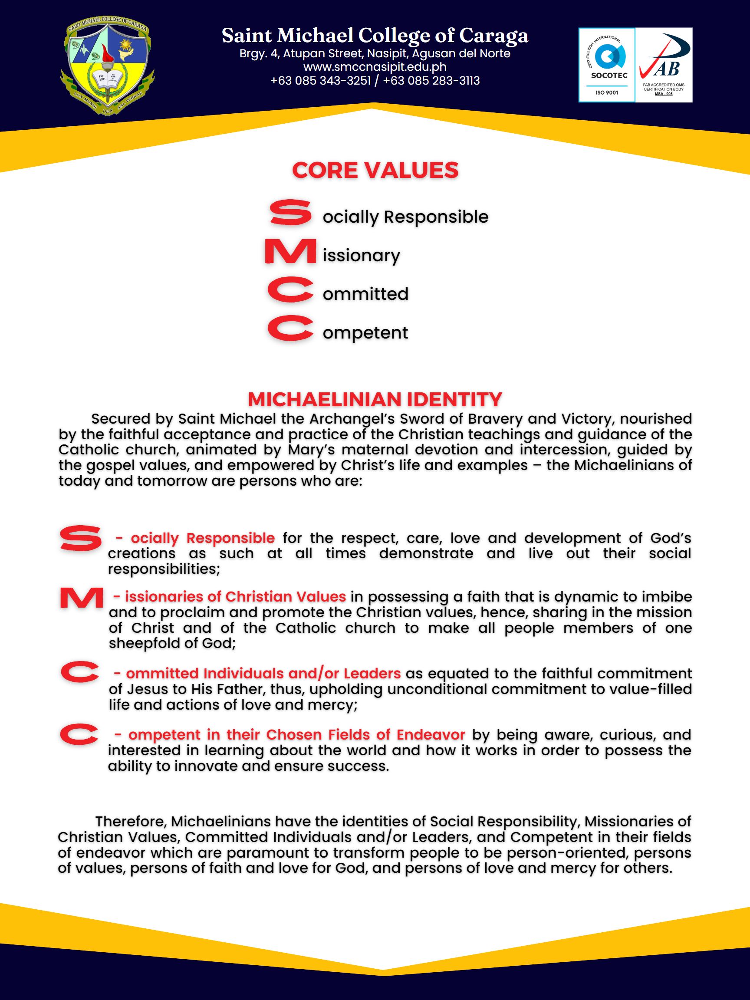
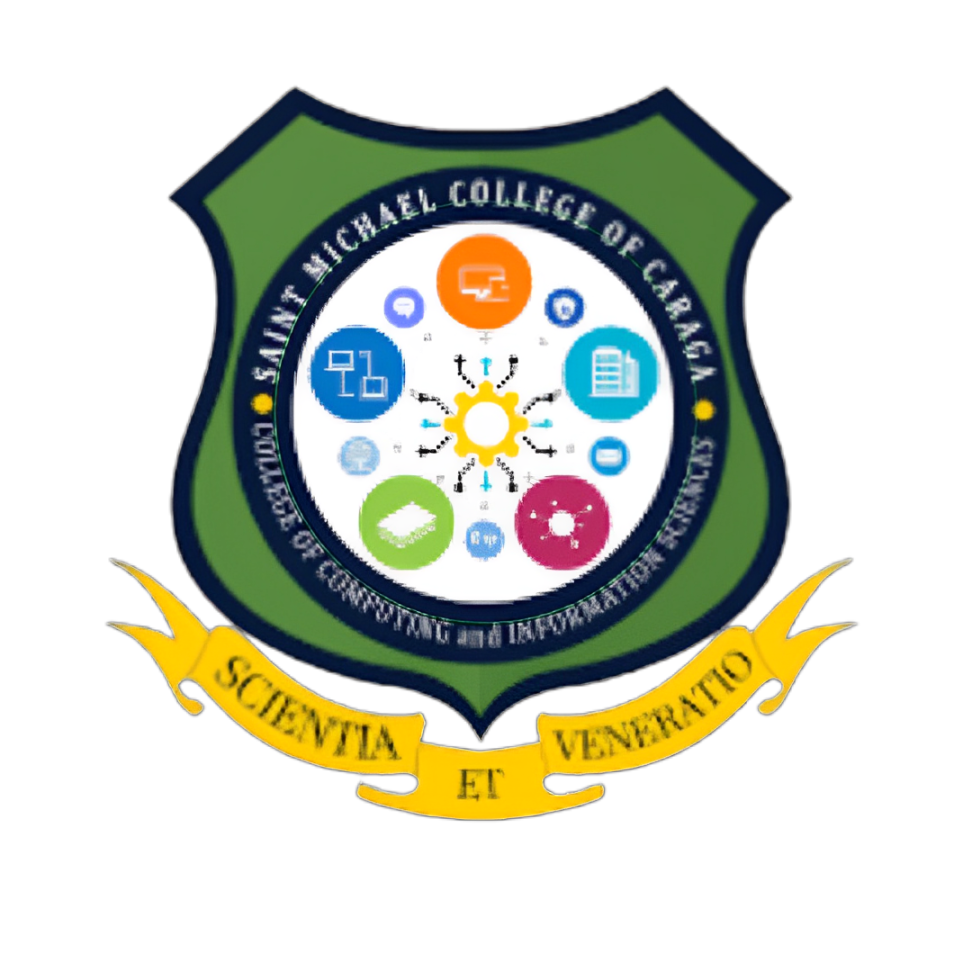

ABOUT SMCC


ALMA MATER HYMN
Embracing Tradition, Igniting the Future | Discover the harmonious blend of heritage and aspiration in the new Alma Mater Song of Saint Michael College of Caraga. Tune in now to experience the melody that resonates with our proud past and bright future. #LuxMundiSalTerrae #SMCCat75
Lyrics: Mr. Reggy Bartido
Music Vocals & Melody Arrangement, Music Song Concept & Overall Arrangement: Ms. Leah C. Castro
Music Chords Harmony Arrangement: Sister Maria Fay G. Mercurio
Music Accompaniment Arrangement: Mr. Kim Quibral
Singers: Ms. Leah C. Castro & Mr. Kim Quibral
Music Recording Team: SMCC Instructional Innovation Center care of Mr. Bill C. Guergio
SMCC OFFICIAL ALMA MATER HYMN
COURSES OFFERED
COLLEGES
